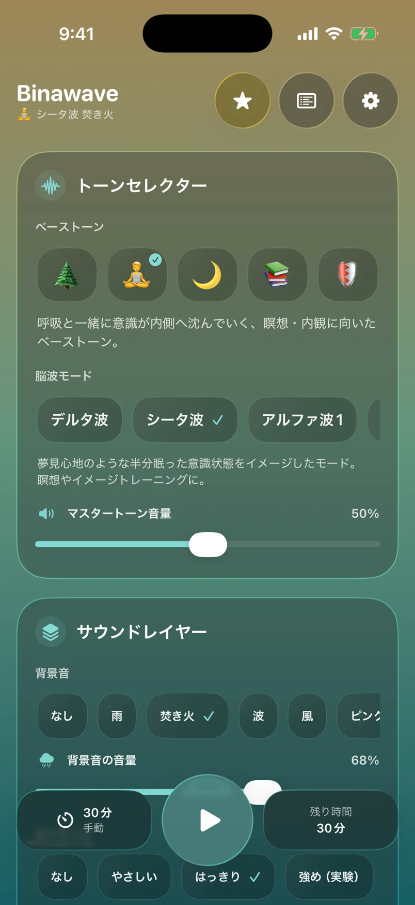
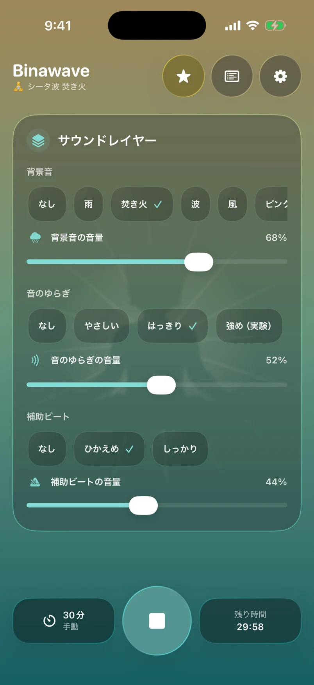
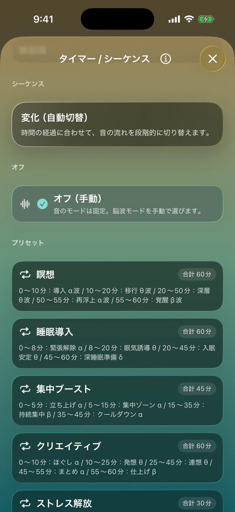
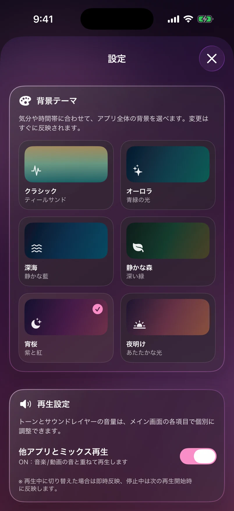

01 / FOCUS
集中する時間に
読みかけの本を開く。ひとつの仕事に向き合う。始める前に、音のある自分の空間を。
BINAURAL BEATS, YOUR WAY
集中したいときも、ひと息つきたいときも。
バイノーラルビートと環境音で、
自分のための心地よい時間を。
無料ダウンロード・アプリ内課金あり

その日の気分に、音を合わせる。
iPhone・iPad対応 · iOS 18以降
SCROLL TO EXPLORE ↓01 / FIND YOUR MOMENT
日常の小さな切り替えに。
聴く時間も、過ごし方も、あなたのペースで。
01 / FOCUS
読みかけの本を開く。ひとつの仕事に向き合う。始める前に、音のある自分の空間を。
02 / UNWIND
忙しかった一日の終わりに。雨や波の音を重ねて、ゆっくり過ごすひとときを。
03 / MEDITATE
目を閉じて、呼吸を感じる。シンプルなトーンを、いつもの瞑想やマインドフルネスに。
02 / DESIGNED AROUND YOU
選んで、重ねて、再生する。
シンプルな操作の先に、あなただけの音の時間。
ベーストーンと脳波モードを組み合わせて、自分好みのバイノーラルビートを生成。気になる音から、気軽に始められます。
一部のトーン・環境音・タイマー・シーケンスなどはPremiumで利用できます。
トーンに環境音を重ねるサウンドレイヤー。雨、焚き火、波、風、ピンクノイズから、今の気分に合う背景音を。
一部のトーン・環境音・タイマー・シーケンスなどはPremiumで利用できます。

5分のひと息から、じっくり過ごす時間まで。タイマーとシーケンスで、音の流れを自分のリズムに合わせられます。
一部のトーン・環境音・タイマー・シーケンスなどはPremiumで利用できます。

背景テーマを変えて、画面も自分らしく。静かな色と光が、毎日の音の時間を彩ります。
一部のトーン・環境音・タイマー・シーケンスなどはPremiumで利用できます。

画面を閉じても、音の時間を。
許可すると、マインドフルネス時間を記録。
Premiumで他アプリの音とミックス再生。
03 / THE BEAUTY OF TWO TONES
バイノーラルビートは、左右の耳で少しだけ異なる周波数の音を聴くと、その差にあたる周期の「うなり」を感じる聴覚現象です。
左右を分けて届けるために、ステレオのイヤホンやヘッドホンで。Binawaveなら、ベーストーンと脳波モードを選ぶだけで、この音の体験をつくれます。
詳しく読む →しくみを説明するための周波数の例です。
04 / SOUND MEETS SCIENCE
バイノーラルビートは、注意や気分などとの関わりが研究されています。毎日の音の時間が、少し楽しみになる研究をご紹介します。
01 / RESEARCH REVIEW
認知・不安・痛みの知覚を対象にした22研究の統合で、全体として有意な中程度の効果が報告されています。周波数や聴く時間、タイミングも検討されています。
02 / ATTENTION & MOOD
30分の注意課題で、ベータ帯のビートはシータ／デルタ帯に比べ、正しい検出が多く、誤反応が少ない結果に。気分にも好ましい違いが報告されました。
ここで紹介するのは各研究条件でのバイノーラルビートの知見です。Binawave自体の臨床試験ではありません。ご自身の心地よさを大切にお楽しみください。
05 / A SIMPLE RITUAL
ステレオのイヤホンやヘッドホンを用意して、心地よい小さめの音量に。
ベーストーン、脳波モード、タイマーを選択。お好みで環境音を重ねます。
読書にも、瞑想にも、ひと息にも。まずは5分から、気軽に始めましょう。
06 / START YOUR WAY
いつもの時間に、少しずつ取り入れられます。
気軽に始めたい方へ
音の楽しみ方を、もっと自由に
Premiumの料金・期間はアプリ内の購入画面でご確認いただけます。サブスクリプションは自動更新され、App Storeのアカウント設定から管理・解約できます。
07 / GOOD TO KNOW
はい。左右の耳へ異なる音を届けるため、ステレオのイヤホンまたはヘッドホンでお楽しみください。
はい。グラウンディング・読書向けのベーストーン、5分・30分のタイマー、雨・ピンクノイズなどを無料で使えます。追加機能はPremiumで利用できます。
読書やデスクワークを始める前、瞑想や呼吸に意識を向ける時間、就寝前の静かなひとときなど、ご自身のペースでお使いいただけます。
はい。アプリは日本語と英語に対応しています。iOSのアプリ別言語設定から切り替えられます。
はい。連携を許可すると、ヘルスケアAppにマインドフルネス時間を記録できます。許可は設定から管理できます。
MAKE SPACE FOR YOURSELF
あなたの毎日に、Binawaveという音の時間。
無料ダウンロード・アプリ内課金あり